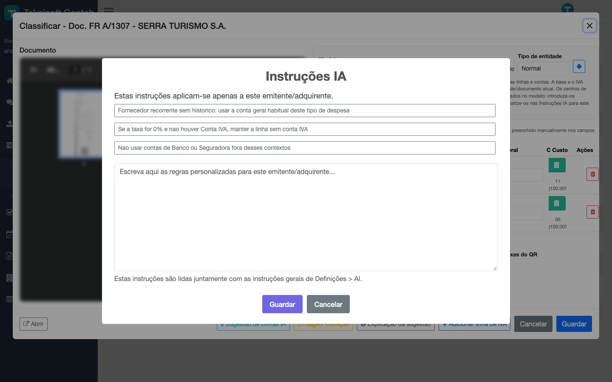
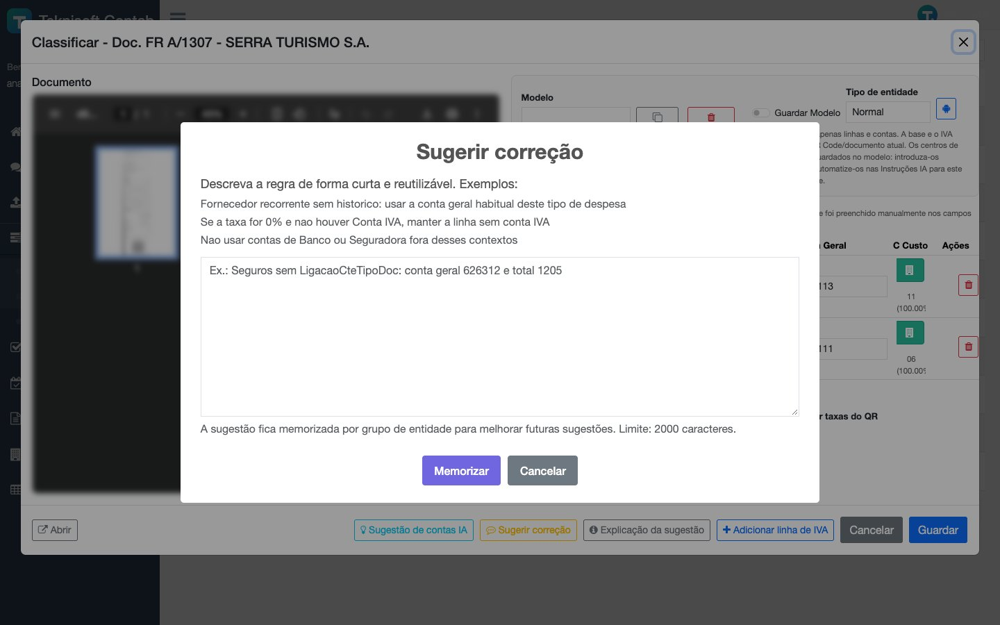
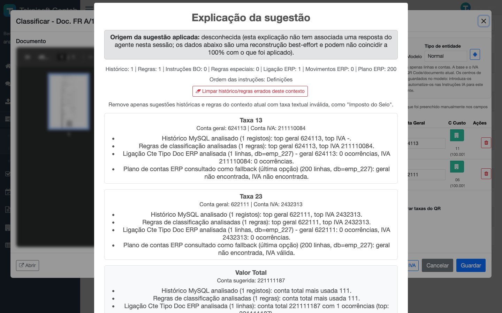

Motor de classificação: regras e aprendizagem
Como o Teknisoft Contab decide que contas propor para cada documento, como o gabinete impõe as suas próprias regras e como cada classificação gravada torna as seguintes mais rápidas e mais certas.
Visão geral
Para cada documento, e para cada taxa de IVA nele presente, o motor tem de propor três contas: a conta geral (gasto/ativo), a conta de IVA e a conta de valor total (contrapartida: fornecedor, banco ou caixa). Para isso combina três famílias de conhecimento:
Regras automáticas
Já vêm com o sistema e com o ERP: parametrização do fornecedor no ERP, movimentos anteriores, plano de contas e regras fiscais. Não exigem configuração.
Regras personalizadas
Escritas pelo gabinete: regras gerais, instruções por fornecedor/cliente, modelos, centros de custo e associações de tipos de documento.
Aprendizagem
O que a equipa grava: cada classificação, cada correção e cada "esquece" alimentam as próximas sugestões.
O contexto de cada sugestão
O motor não olha só para o fornecedor. A "chave" de cada decisão combina:
| Dado | Origem | Exemplo de efeito |
|---|---|---|
| NIF do emitente | QR / OCR | Procura a parametrização deste fornecedor no ERP. |
| NIF do adquirente | QR / OCR | O mesmo fornecedor pode ter contas diferentes em clientes diferentes. |
| Tipo de documento | QR (FT, FR, FS, NC, ND...) | Uma NC inverte débito/crédito; FR é tratada como FT no ERP. |
| Data do documento | QR | A parametrização do ERP é pedida para o exercício certo. |
| Taxas presentes | QR (6%, 13%, 23%, 0%, regiões autónomas) | Cada taxa recebe as suas contas. |
| Tipo de entidade | Normal · Banco · Seguradora | Ativa regras próprias (empréstimos, seguros). |
| Recibo no mesmo PDF | Leitura do ficheiro | A fatura já paga leva a conta de banco/caixa no valor total. |
| Regime do cliente | Ficha > Admin | Cliente isento: sem conta de IVA. |
Regras automáticas
Funcionam desde o primeiro dia, sem configuração, porque se apoiam no que já existe no ERP do cliente.
1. Ligação Cte Tipo Doc (parametrização no ERP)
É a fonte mais autoritativa. No ERP, cada fornecedor pode ter, por tipo de documento, as contas a usar. O motor consulta essa ligação com o NIF do emitente, o tipo de documento e a data, e usa:
- a conta da linha de gasto como conta geral;
- a conta de IVA como conta de IVA;
- a linha da entidade (tipo C) como conta de valor total.
A taxa de cada linha é reconhecida pela descrição da rubrica no ERP (Taxa Reduzida = 6%, Taxa Intermédia = 13%, Taxa Normal = 23%), porque os campos numéricos de taxa nem sempre vêm preenchidos. O motor tenta vários candidatos (NIF do emitente, variações, base do cliente, base por omissão) até encontrar a parametrização.
2. Movimentos anteriores no ERP
Se ainda faltar alguma conta, o motor analisa os lançamentos já existentes na contabilidade do cliente para o mesmo tipo de documento e usa as contas mais frequentes para preencher o que está vazio.
3. Plano de contas do ERP (último recurso e validação)
O plano de contas serve para duas coisas: validar que cada conta proposta existe e aceita movimento, e, em último caso, encontrar a conta de IVA adequada a uma taxa (por exemplo, a conta de IVA dedutível 23% associada à conta geral escolhida). Nunca se sobrepõe a evidência de maior prioridade.
4. Regras fiscais e contabilísticas fixas
| Situação | Regra aplicada |
|---|---|
| Taxa 0% | Sem conta de IVA; o documento pode ficar verde. |
| Cliente isento (art. 9.º CIVA) | Sem linha de IVA; base + IVA na conta geral. |
| Combustíveis (rubricas configuradas) | Só 50% do IVA é dedutível; os outros 50% somam-se à base e o total mantém-se. Aplica-se quando a taxa já tem conta geral e conta de IVA, também na importação em lote. |
| Nota de crédito | Natureza invertida; conta de IVA direta para a taxa; linha de valor total preservada. |
| Fatura com recibo no mesmo PDF | Valor total numa conta de banco/caixa (12.../11...), memorizado à parte. |
| Valor total sugerido em 21 (clientes) com ligação a 22 (fornecedor) | Corrigido automaticamente para a conta de fornecedor. |
| Fornecedor sem parametrização no ERP | Não inventa conta geral; avisa "fornecedor não encontrado no ERP". |
| Fornecedor sem conta corrente | A conta 22 é criada (ou reutilizada pelo NIF) no momento da importação. |
| Autoliquidação | Sugere o tratamento de IVA autoliquidado e pede a dedutibilidade. |
5. Deteção do tipo de entidade
Bancos e seguradoras têm documentos com estrutura própria. O motor deteta-os (por exemplo, pelos termos capital, juros, comissão ou apólice, prémio, segurado) e aplica as regras do tipo certo, dando sempre prioridade a Seguradora sobre Banco para não confundir imposto do selo de um seguro com um empréstimo. O técnico pode mudar o tipo no modal; o tipo fica também visível na lista de fornecedores do cliente.
6. Classificação automática na lista
Quando a combinação fornecedor + cliente + tipo de documento já foi classificada antes, a linha é preenchida sem abrir o modal e aparece logo como Classificado. O botão global Classificado (N) importa esses documentos com a configuração efetiva (linhas do documento + classificação memorizada), mesmo que ninguém tenha aberto o modal.
As respostas do ERP usadas nas sugestões ficam em cache por empresa (6 horas por omissão), pelo que abrir a lista ou trocar de cliente não volta a consultar o ERP linha a linha.
Regras personalizadas
Cada gabinete tem critérios próprios. O Teknisoft Contab permite escrevê-los em linguagem natural, em três âmbitos, do mais geral ao mais específico.
1. Regras gerais do gabinete
Definições > AI > Instruções adicionais. Tudo o que estiver a seguir a um título começado por "Regras de classificação" é lido pelo motor como regras de classificação para todos os clientes.
Regras de classificacao - Seguradoras com Imposto do Selo
Aplicar apenas quando emitter_type == 2.
- Criar 1 linha unica, taxa 0%, base = total do documento.
- Nao tratar imposto do selo como IVA.
- Se nao existir Ligacao ERP para documento de seguradora:
- Conta Geral = 626312
- Valor Total = 1205- Blocos condicionais: frases como "Aplicar apenas quando emitter_type == 1" (Banco) ou == 2 (Seguradora) fazem com que o bloco só valha para esse tipo de entidade.
- Contas explícitas ("Conta Geral = 626312") são aplicadas diretamente; o restante texto orienta a IA na estrutura das linhas (dividir em juros e comissões, criar linha única, etc.).
2. Instruções por fornecedor e cliente
Regras que só valem para um par emitente + adquirente. Editam-se no modal de classificação (botão 🤖 Instruções IA) ou na lista de Fornecedores do cliente (botão IA). Um distintivo Instruções IA definidas avisa quando o par já tem regras.

Exemplos típicos:
- "Ao classificar um documento desta entidade, adicionar uma linha de taxa 0% com conta geral 6248."
- "Este fornecedor fatura eletricidade da sede e do armazém: 60% centro de custo 01, 40% centro de custo 02."
- "Usar sempre a conta 62211 para a taxa 23%; a 6% é material de escritório, conta 62213."
- "O cliente escreve à mão no documento a obra a que se destina; usar essa anotação como centro de custo."
Quando uma instrução fala de "anotações" (notas escritas à mão no papel antes da digitalização), o motor usa OCR sobre a imagem para as tentar ler e aplicar (conta, centro de custo, taxa). Se a leitura não for fiável, diz-o explicitamente e pede confirmação, em vez de adivinhar.
3. Modelos de classificação
No topo do modal, Guardar Modelo grava as linhas e contas atuais com um nome. Depois, em qualquer documento do mesmo tenant, adquirente e tipo documental, Selecionar modelo > Aplicar repõe essa estrutura. Útil para reaproveitar uma classificação manual trabalhosa entre emitentes diferentes (por exemplo, rendas de vários senhorios).
Apenas linhas e contas. Bases e IVA vêm sempre do QR/documento atual. Os centros de custo não ficam no modelo: introduza-os manualmente ou automatize-os nas Instruções IA do par.
4. Centros de custo e dedutibilidade
Por cliente e centro de custo, pode definir se o IVA é dedutível e as contas de IVA dedutível e não dedutível. Quando um documento é distribuído por centros de custo, cada parte recebe a conta de IVA certa.
5. Associação de tipos documentais
Quando o tipo de documento lido no QR não corresponde a um tipo do ERP do cliente, Associar tipo documental QR grava o mapeamento (por base ERP) e passa a aplicá-lo nas importações seguintes.
Modo de aprendizagem
O motor aprende com o trabalho normal da equipa: não há um "modo de treino" separado. Cada gesto de validação ou correção fica registado e reutilizado.
1. Memória de classificação (por fornecedor + cliente + tipo)
Ao Guardar no modal, a classificação fica memorizada para a combinação emitente + adquirente + tipo de documento, com as contas por taxa e a conta de valor total. A memória distingue faturas normais de faturas com recibo no mesmo PDF, para não confundir a conta de fornecedor com a de banco.
2. Histórico de documentos
Cada documento classificado é também um exemplo. Quando não há memória exata, o motor alarga a procura por etapas:
- Estrito: mesmo cliente, mesmo tipo de documento, mesmo fornecedor.
- Por cliente: outros documentos do mesmo cliente, para taxas ainda sem conta.
- Por tipo de documento: documentos do mesmo tipo noutros contextos, como último recurso do histórico.
Em cada etapa contam-se as contas mais usadas por taxa (as mais frequentes ganham).
3. Correções memorizadas ("Sugerir correção")
Quando uma sugestão está errada por uma razão que se vai repetir, use Sugerir correção no modal e escreva a regra de forma curta e reutilizável.

- As correções ficam agrupadas por tipo de entidade: uma correção de Banco nunca afeta documentos de fornecedores normais.
- As correções mais recentes de cada grupo são incluídas em todas as sugestões desse grupo.
- Exemplos: "Banco com CAPITAL, JUROS e COMISSÕES: JUROS = 6911, COMISSÕES = 698812"; "Medis/Multicare: tratar como Seguradora e nunca como Banco".
4. Registo de cada sugestão
Cada sugestão fica registada com as fontes usadas (histórico, regras, instruções gerais, instruções do par, correções, ligação ERP, movimentos, plano de contas) e com a indicação de se foi aceite. Isto alimenta a explicação da sugestão e permite medir a qualidade ao longo do tempo.
5. Desaprender
- Limpar histórico/regras errados deste contexto (na Explicação da sugestão): remove memórias inválidas do contexto atual (por exemplo, uma taxa textual "Imposto do Selo" gravada por engano).
- Voltar a classificar e gravar corretamente substitui a memória da combinação.
- Instruções de par e regras gerais podem ser editadas ou apagadas a qualquer momento.
- No assistente, mensagens como "esquece", "errado" ou "ignora" não são memorizadas e removem a memória recente correspondente.
Ordem de prioridade
Quando várias fontes têm opinião, vale a seguinte ordem para a conta geral e a conta de IVA de cada taxa:
- 1Instruções com conta explícitaRegras do par fornecedor/cliente, regras gerais do gabinete e correções memorizadas que indicam uma conta concreta.
- 2Ligação Cte Tipo Doc do ERPParametrização oficial do fornecedor no ERP, por taxa.
- 3Memória de classificação e históricoO que o gabinete já gravou para esta combinação, depois para o cliente, depois para o tipo de documento.
- 4Linhas esperadasEstrutura deduzida dos exemplos (por exemplo, linhas extra de banco ou seguro).
- 5Movimentos ERPContas mais frequentes nos lançamentos do cliente, só para o que estiver vazio.
- 6Plano de contas ERPValidação e último recurso para a conta de IVA da taxa.
- 7IA (modelo de linguagem)Interpreta as instruções em texto livre e propõe operações sobre as linhas (dividir, juntar, acrescentar), sempre sobre as contas encontradas acima, nunca inventando contas.
Para a conta de valor total: Ligação ERP (conta de fornecedor) > instruções (só se a ligação não tiver conta) > memória/histórico > regras; com as correções automáticas de recibo no mesmo PDF e de 21 para 22 descritas acima.
Explicação da sugestão
Em qualquer documento, Explicação da sugestão mostra, taxa a taxa, as evidências encontradas e de onde veio a conta proposta.

- No topo: quantas evidências houve em cada fonte e a ordem de instruções aplicada.
- Por taxa: conta geral e conta de IVA propostas e as razões ("Histórico analisado (12 registos): top geral 62211...", "Ligação Cte Tipo Doc analisada...").
- No valor total: a conta sugerida e porquê; avisa explicitamente quando o fornecedor não existe no ERP.
A explicação permite ao técnico confiar na sugestão (ou perceber depressa porque está errada) e ao responsável auditar a qualidade da classificação.
Boas práticas
- Comece pelo ERP: mantenha a Ligação Cte Tipo Doc dos fornecedores recorrentes no ERP. É a regra com maior autoridade e serve todas as ferramentas.
- Grave sempre pelo modal os primeiros documentos de um fornecedor novo: a partir daí, chegam verdes.
- Use instruções de par para exceções de um fornecedor num cliente; use regras gerais para critérios do gabinete inteiro.
- Escreva correções curtas e reutilizáveis, com a conta concreta.
- Confira a Explicação quando uma sugestão surpreender, e limpe memórias erradas do contexto.
- Separe classificar de importar nas permissões, se quiser um passo de revisão.
Exemplos práticos
Fornecedor recorrente já parametrizado
Fatura de telecomunicações, 23%. A Ligação ERP devolve as contas do fornecedor (por exemplo, gasto 6222, IVA dedutível 23% e conta corrente 2211...). A linha chega verde; o técnico importa em lote com Classificado (N).
Fornecedor novo, sem parametrização
O motor avisa "fornecedor não encontrado no ERP" e não inventa conta geral. O técnico classifica uma vez e grava; na importação, a conta corrente 22 do fornecedor é criada automaticamente. O próximo documento deste fornecedor para este cliente chega verde.
Prestação de empréstimo bancário
Tipo de entidade Banco. As regras gerais dividem o documento em linhas de juros e comissões com as contas definidas (por exemplo 6911 e 698812), e o capital segue a conta do ERP. Uma correção memorizada no grupo Banco aplica-se a todos os bancos.
Fatura já paga (com recibo no mesmo PDF)
O recibo é ocultado; o valor total vai para a conta de banco que o gabinete usou nesse caso da última vez, e não para a conta do fornecedor.